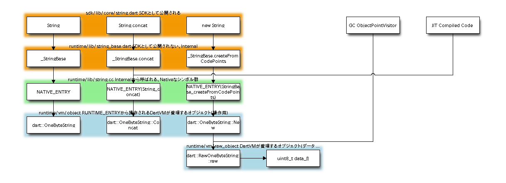

Dart VM Advent Calendar 2012 12/21¶
DartのStringに関して¶
Dart には、String系のAPIとして以下が定義されています。
- String
- StringBuffer
- Strings
- interpolate “${a}”こういうの
concatしてみます。
concat¶
src
String concatString(String init, int i) {
// must toString()
return "<test>".concat(init).concat(i.toString()).concat("</test>");
}
String.concat(String)で文字列をつなげます。
Stringのconcatは、以下のような呼び出しの連鎖になります。
concat
bench/stringconcat.dart::stringconcat()
-> sdk/lib/String.dart::String.concat()
-> runtime/lib/string_base.dart::_StringBase.concat() native "String_concat"
-> runtime/lib/string.cc::DEFINE_NATIVE_ENTRY(String_concat)
-> dart::String::Concat()
-> dart::OneByteString::Concat()
-> dart::String::Copy()
-> dart::OneByteString::raw()
dartのソースコード、concatStringは、どのようにJITコンパイルされるのでしょうか？
IR¶
concatString
2: B1[target] ParallelMove ecx <- S-2, eax <- S-1
4: CheckStackOverflow:2()
6: v4 <- Constant:3(#<test>) {PT: _OneByteString@0x36924d72} {PCid: _OneByteString@0x36924d72}
8: PushArgument:4(v4) {PCid: dynamic}
10: PushArgument:6(v2) {PCid: dynamic}
12: v5 <- PolymorphicInstanceCall:24(concat, v4, v2 IC[1: _OneByteString@0x36924d72 #600]) {PT: dynamic} {PCid: dynamic} env={ v1 [S-3], v2 [S-2], v3 [S-1], a0, a1 }
13: ParallelMove eax <- eax
14: ParallelMove S+0 <- eax
14: PushArgument:8(v5) {PCid: dynamic}
15: ParallelMove ecx <- S-1
16: PushArgument:10(v3) {PCid: dynamic}
18: CheckSmi:11(v3) env={ v1 [S-3], v2 [S-2], v3 [ecx], a0, a1 }
20: v6 <- PolymorphicInstanceCall:26(toString, v3 IC[1: _Smi@0x36924d72 #600]) {PT: dynamic} {PCid: dynamic} env={ v1 [S-3], v2 [S-2], v3 [S-1], a0, a1 }
21: ParallelMove eax <- eax
22: PushArgument:12(v6) {PCid: dynamic}
23: ParallelMove eax <- S+0
24: CheckClass:13(v5 IC[1: _OneByteString@0x36924d72 #600]) env={ v1 [S-3], v2 [S-2], v3 [S-1], a0, a1 }
26: v7 <- PolymorphicInstanceCall:28(concat, v5, v6 IC[1: _OneByteString@0x36924d72 #600]) {PT: dynamic} {PCid: dynamic} env={ v1 [S-3], v2 [S-2], v3 [S-1], a0, a1 }
27: ParallelMove eax <- eax
28: PushArgument:14(v7) {PCid: dynamic}
30: v8 <- Constant:15(#</test>) {PT: _OneByteString@0x36924d72} {PCid: _OneByteString@0x36924d72}
32: PushArgument:16(v8) {PCid: dynamic}
34: CheckClass:17(v7 IC[1: _OneByteString@0x36924d72 #600]) env={ v1 [S-3], v2 [S-2], v3 [S-1], a0, a1 }
36: v9 <- PolymorphicInstanceCall:30(concat, v7, v8 IC[1: _OneByteString@0x36924d72 #600]) {PT: dynamic} {PCid: dynamic} env={ v1 [S-3], v2 [S-2], v3 [S-1], a0, a1 }
37: ParallelMove eax <- eax
38: Return:18(v9)
concatString()はinline展開されて、上記のようなIRになっています。
具体的には、以下のdartのソースコードまでがinline展開されています。
bench/stringconcat.dart::stringconcat()
-> sdk/lib/String.dart::String.concat() <-- ここまでinline展開
/*** inline展開の壁 ***/
-> runtime/lib/string_base.dart::_StringBase.concat() native "String_concat" <-- polymorphicInstanceCall
/*** dartとC++のソースコードの壁 ***/
-> runtime/lib/string.cc::DEFINE_NATIVE_ENTRY(String_concat)
-> dart::String::Concat()
-> dart::OneByteString::Concat()
-> dart::String::Copy()
-> dart::OneByteString::raw()
PolymorphicInstanceCallのアセンブラ出力
;; CheckClass:13(v5 IC[1: _OneByteString@0x36924d72 #600])
0xb2fc91a9 a801 test al,0x1 // HeapTag check
0xb2fc91ab 0f8470000000 jz 0xb2fc9221 // goto deoptimization
0xb2fc91b1 0fb74801 movzx_w ecx,[eax+0x1] // load classid
0xb2fc91b5 83f94d cmp ecx,0x4d // class check
0xb2fc91b8 0f8563000000 jnz 0xb2fc9221 // goto deoptimization
;; v7 <- PolymorphicInstanceCall:28(concat, v5, v6 IC[1: _OneByteString@0x36924d72 #600]) {PT: dynamic} {PCid: dynamic}
0xb2fc91be bac1d916b3 mov edx,0xb316d9c1 Array[2, 2, null]
0xb2fc91c3 e860713702 call 0xb5340328 [stub: CallStaticFunction]
0xb2fc91c8 83c408 add esp,0x8
PolymorphicInstanceCallですが、1種類しか呼び出さないため、速そうです。
CallStaticFunctionで、concatを呼び出すだけですね。
CallStaticFunctionから呼び出すconcatは、runtime/lib/string_base.dart _StringBase.concat()です。
runtime/lib/string_base.dart
class _OneByteString extends _StringBase implements String { //TypeFeedback上は_OneByteStringです。
factory _OneByteString._uninstantiable() { //
throw new UnsupportedError(
"_OneByteString can only be allocated by the VM");
}
concatは、dartのString_base.concat から、 native “String_concat” を呼び出します。
最終的には、Dart VM内のdart::String.Concat()関数を呼び出します。
RawOneByteString* OneByteString::Concat(const String& str1,
const String& str2,
Heap::Space space) {
intptr_t len1 = str1.Length();
intptr_t len2 = str2.Length();
intptr_t len = len1 + len2;
const String& result = String::Handle(OneByteString::New(len, space));
String::Copy(result, 0, str1, 0, len1);
String::Copy(result, len1, str2, 0, len2);
return OneByteString::raw(result);
}
JITコンパイルされたdartのコードから、最終的に上記のC++のConcatが呼ばれます。
dartのlib用に公開している、nativeなシンボルを経由する場合、オーバーヘッドはどのくらいなのでしょうか。
上記オーバーヘッドを削除して、更なる高速化を目指す場合、二つの方法があります。
1つ目は、Concatに対応するIRを追加し、Emit時に上記の処理をアセンブラで出力する。
2つ目は、String_Concatシンボルの処理を複数のIRの組み合わせに置換することです。
そういえば、V8のStringAdd処理などは、アセンブラマクロになっていて、アセンブラでかかれていました。
V8の文字列処理が速い理由は、上記のような処理をアセンブラに置き換えていって、すべてVM内で処理していった結果なのかも、しれませんね。
(´Д｀；)ハアハア

まとめ¶
- dartのString.concat()は、最終的にdart::OneByteString::Concat()を呼び出す。
- JITコンパイルされたコードは、native extensionによって公開されたシンボルを呼び出す。